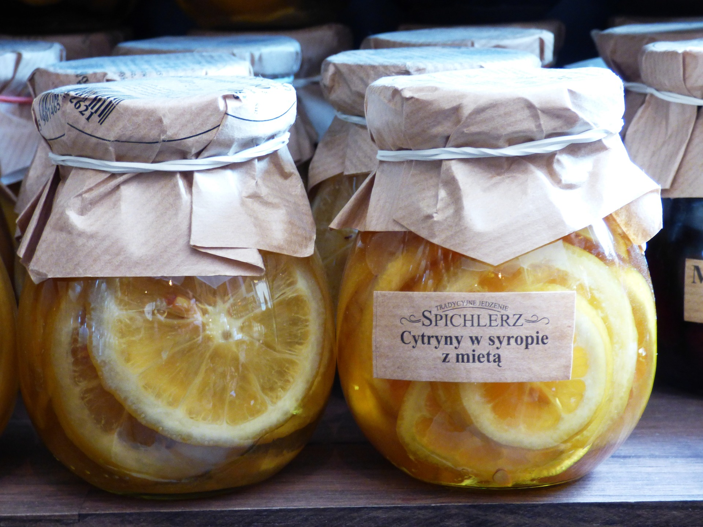
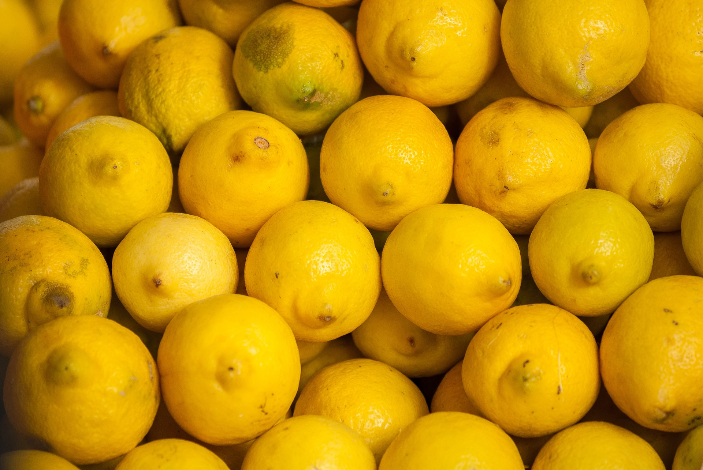
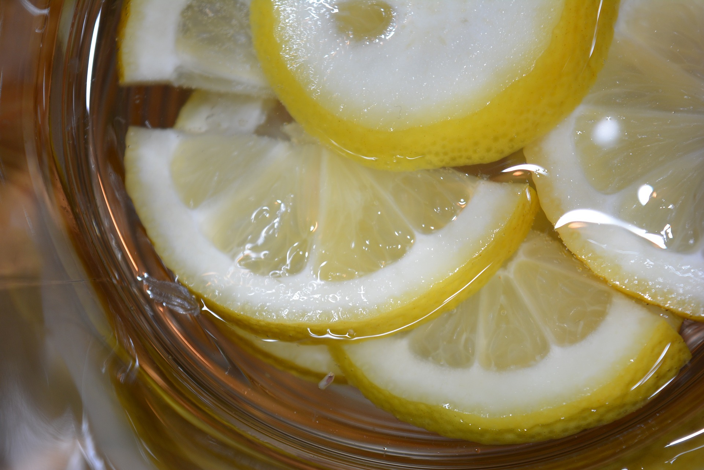

레몬청
레몬청 만드는 방법

- 레몬을 베이킹소다로 문질러 세척 한 후 끓는 물에 30초 정도 데쳐 잔류 농약을 없앤다.
- 잘 씻은 레몬은 물기를 제거한 뒤 얇게 썰어둔다.
- 설탕과 레몬을 1:1 비율로 섞어 열탕 소독한 유리병에 담으면 된다.
- 설탕과 버무린 레몬을 유리병에 담은 후 공기가 통하지 않도록 설탕을 올려 뚜껑을 닫으면 완성이다.
- 실온에서 3~5일 정도 그늘진 곳에서 발효시킨 후 냉장 보관하면 된다.
레몬의 효능

- 피로회복에 좋다.
- 감기에 좋다.
- 체내 독소 배출에 좋다.
주의사항

- 레몬은 산이 강해서 레몬을 공복 상태에서 먹는 경우 강한 산으로 인해 위장 장애가 발생할 수 있어 주의가 필요하다.
출처